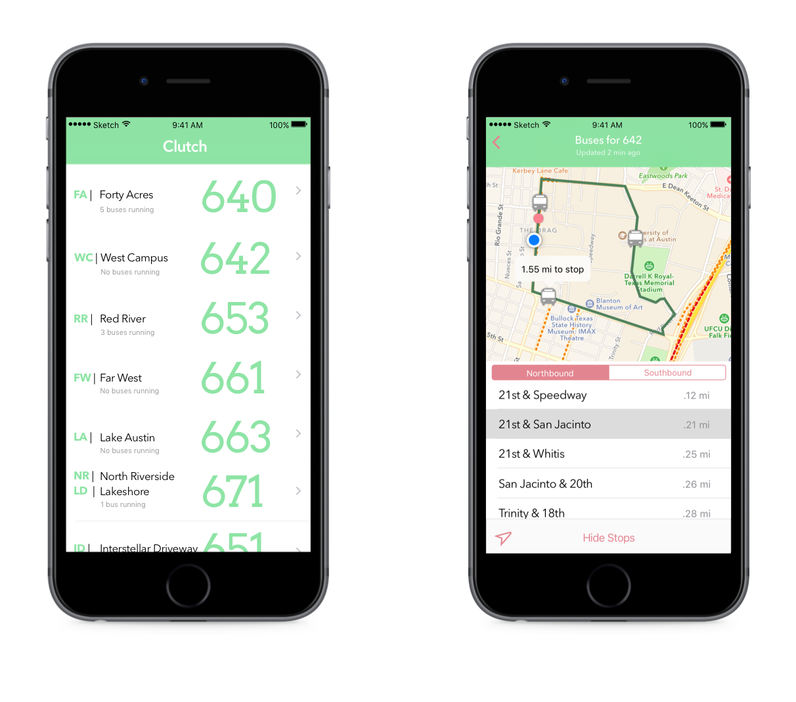
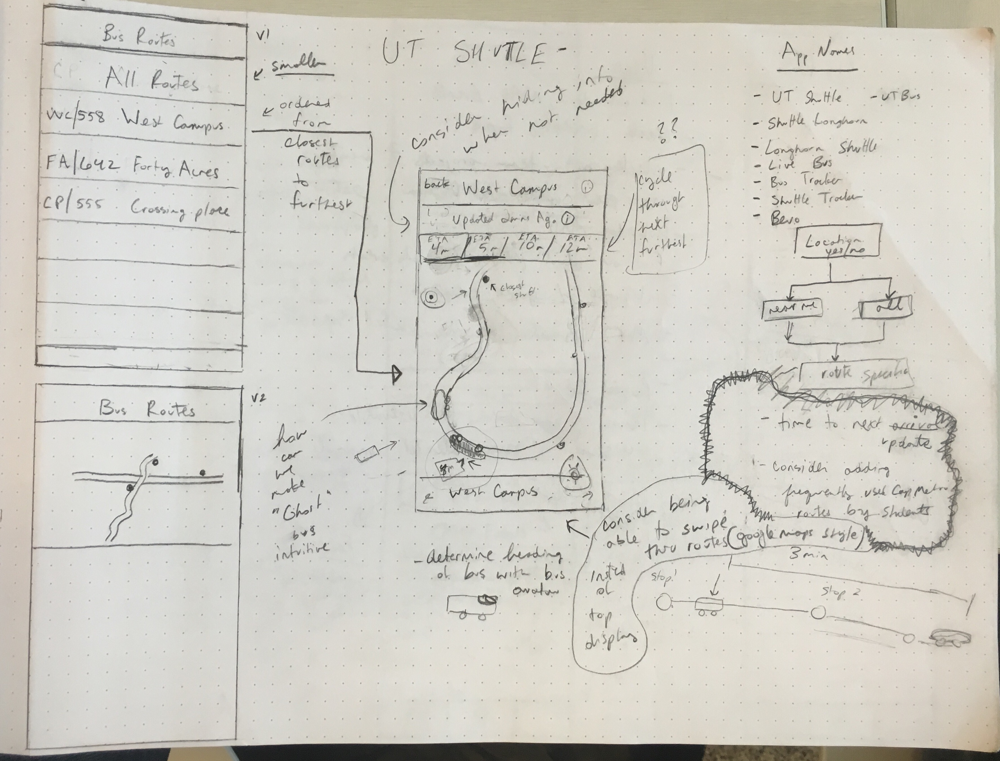
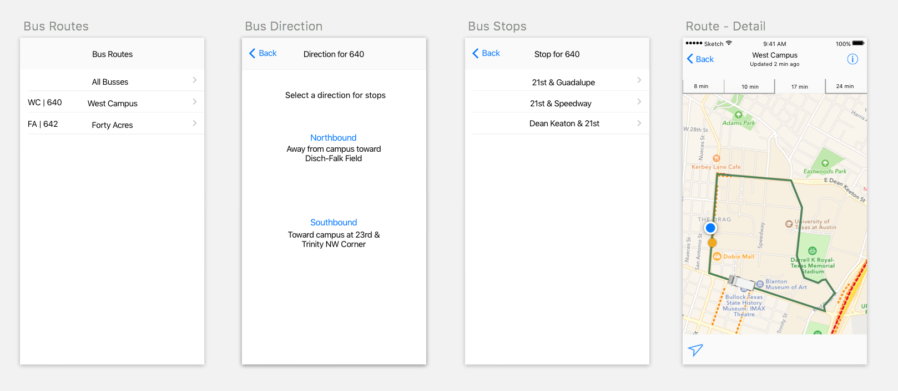
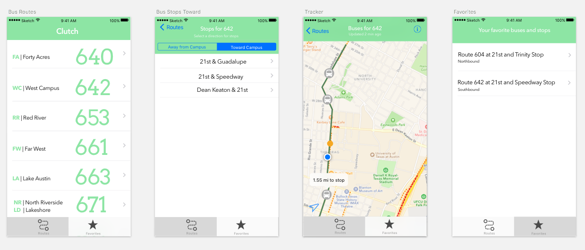
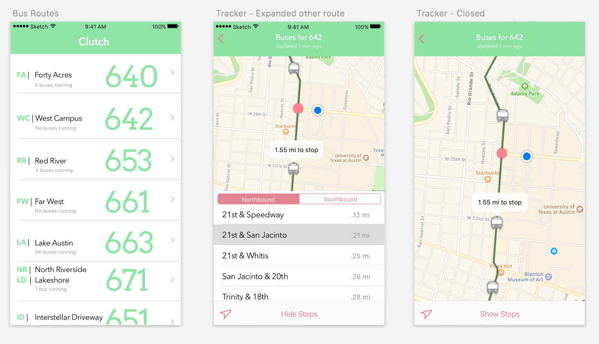

Clutch
You don't have to wait for a bus that never shows up.

OVERVIEW
Clutch is an iOS app that tracks and displays bus locations. It's available in the app store. The goal of this semester long project was to work on an interdisciplinary team with four other UT students that focused on marketing (social media), branding, and creating a successful product.
Role:
User Research, Prototyping, Visual Design, ProgrammingBrainstorming and Research:
We were given a week to come up with an app proposal for this class. We brainstormed many ideas but found that one of the pain points everyone on our team shared, was that we felt the available resources for tracking the buses in austin were not great. We sent out surveys to figure out if this issue scaled to the larger UT population. Here are some answers from our survey that verified that the pain points we identified were widespread:

Coincidentally, while we were during our intial research a Daily Texan article was written suggesting a tracking app would improve the West Campus bus systen, further verifying our problem.
UI Sketches & Wireframes:
We started by deciding on a feature set for our MVP. Once this set had been decided, we set goal for our first sprint, then began to work. We searched for a data source for route times. We began to work on how our data would be structued and how the app would display that data to users.

User Testing, Prototyping, Iteration:
After we were done creating wireframes, we made a clickable prototype with inVision in order to get our app in front of users as quickly as possible and make sure that our design worked well for users
Version 1
Version 2
Version 3
Launch
Here's a short promotional demo made by a teammate:
At our app demo day, our app won best overall app and best presentation! We have some daily users and are are planning on maintaining the app as long as it is useful to UT students.
Github repo for the project
App on iOS store